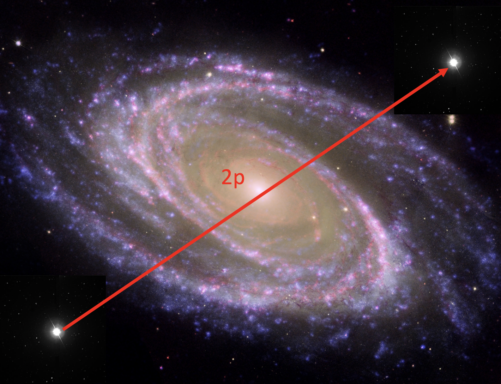

Forrige side🙂 🙁parallakse

Her ser vi stjerna med galaksen i bakgrunnen igjen, der bildene nå er lagt over hverandre slik at vi ser stjerna i begge posisjoner. Dette bildet er tatt med det samme teleskopet med 6 måneders mellomrom. Vinkelavstanden mellom de to stjernene på det sammensatte bildet her er 0.1”. Hvor langt unna er stjerna? ca. 32 ly ca. 65 ly ca. 130 ly ca. 260 ly ca. 520 ly